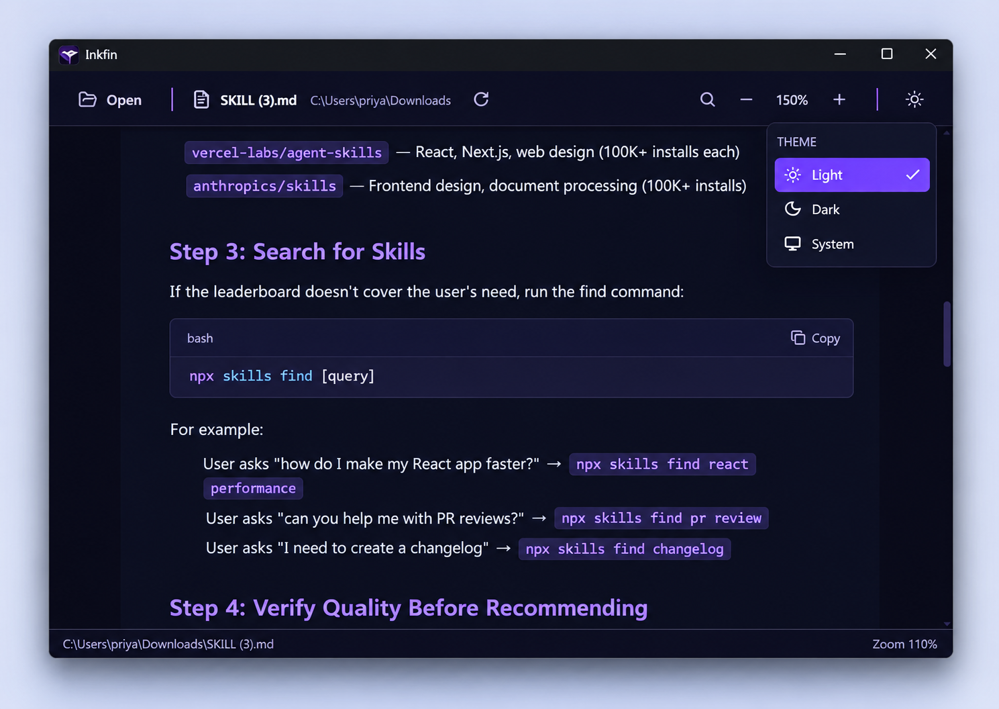
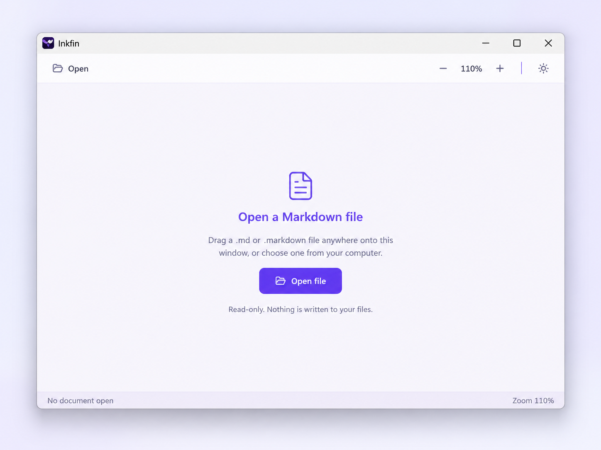
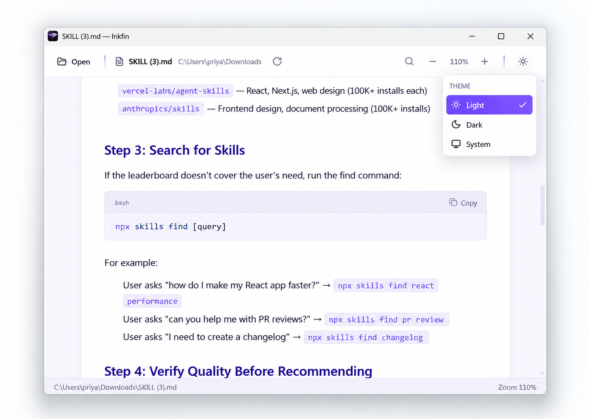

Open it your way
Use the toolbar, drag in a file, or open .md and .markdown files from Explorer.
Markdown reader for Windows
Open a local file and read. No editor chrome, no account, no cloud.


Made for reading
GitHub Flavoured Markdown becomes a focused document, with the controls you need always within reach.

Use the toolbar, drag in a file, or open .md and .markdown files from Explorer.
Scale the document from 75% to 200%. The toolbar stays steady and the preference persists locally.
Inkfin watches the file on disk and reloads changes while preserving scroll position and the search query.
Pick either theme or follow the system. Document and syntax colours update together without a restart.
Private by construction
Inkfin reads the file you choose and renders it on your PC. There are no accounts, analytics, telemetry or network requests.
Remote images are blocked. Raw HTML is not executed. Links, assets and paths are validated by the Rust backend.
Inkfin 0.1.1 for Windows 10 and 11, x64. Installer size: 3.5 MB.
Download Inkfin ↓The installer is not code-signed yet, so Windows SmartScreen may ask you to confirm the first run.64-bit Windows 10 and Windows 11. The installer includes the WebView2 bootstrapper.
No. Inkfin is deliberately read-only and never writes back to your Markdown document.
Yes. Rendering, highlighting, search and refresh all run locally. Remote images are intentionally blocked.
The current installer is not code-signed. Choose “More info” and “Run anyway” if you trust the download.